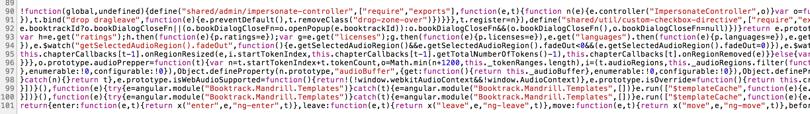

Continuous deployment of a Single Page Application on Azure
Part of dev team @ Booktrack
-
 Konstantin Raev
Konstantin Raev -
 Richard Sentino
Richard Sentino
Our front end stack
- Angular.js
- Typescript
- SASS & Stylus
- Require.js
- many more 3rd party libs
Angular.js

Typescript
A superset of EcmaScript 6 with compile time type checking

Typescript + Angular

Stylus

Optimized for download
How to compile that?
funny image
Grunt.js
Problem?
module.exports = function (grunt) {
var config = {
typescript: {
main: {
src: ['app/**/*.ts'],
dest: '.tmp', // typescript is always compiled here
options: {
module: 'amd',
target: 'es5',
sourcemap: "<%= sourcemap %>"
}
},
test: {
src: ['test/**/*.ts'],
dest: '.tmp', // typescript is always compiled here
options: {
module: 'amd',
target: 'es5',
sourcemap: "<%= sourcemap %>"
}
}
},
requirejs: {
compile: {
options: {
useStrict: true,
removeCombined: true,
baseUrl: '.tmp/app',
optimize: "uglify2",
uglify2: {
mangle: true
},
wrap: {
start: "'use strict';",
end: ""
},
modules: [
{
name: 'libs',
include: ['almond', 'angular', 'angularSanitize', 'angulartics', 'createDialog',
'studioPlayers', 'iscroll', 'zepto', 'snaprfx', 'buzz', 'slider',
'disqus', 'tinyMce', 'angularUuid', 'diffPatch'],
create: true,
override: { // TODO better uglify modules before concatenating
optimize: "none",
uglify2: {
mangle: false
},
wrap: {
// some libs don't work well with use strict pragma, disabling it for 3rd parties
start: "",
end: ""
}
}
},
{
removeCombined: true,
name: 'mandrill',
include: ['bootstrap'],
exclude: ['libs'],
create: true,
insertRequire: ['bootstrap']
}
],
paths: {
almond: '../../node_modules/grunt-requirejs/node_modules/almond/almond',
angular: '../../components/angular/angular.min',
angularSanitize: '../../components/angular/angular-sanitize.min',
angulartics: '../../components/angulartics/dist/angulartics.min',
createDialog: '../../components/angularjs-modal-service/src/createDialog',
studioPlayers: '../../components/studio/build/studio',
iscroll: '../../components/iscroll/dist/iscroll-probe-min',
zepto: '../../components/zepto/zepto.min',
snaprfx: '../../components/snapr/build/snaprfx.min',
buzz: '../../components/buzz/buzz',
slider: '../../components/angular-slider/angular-slider.min',
disqus: '../../components/angular-disqus/angular-disqus.min',
templates: 'mandrill-templates',
config: 'config',
tinyMce: '../../components/bower-cpa-tinymce/tinymce.min',
angularUuid: '../../components/angular-uuid/uuid.min',
diffPatch: '../../components/google-diff-match-patch-js/diff_match_patch'
},
shim: {
almond: {'exports': ['requirejs', 'require', 'define']},
angular: {'exports': 'angular'},
angularSanitize: {'deps': ['angular']},
angulartics: {deps: ['angular'], 'exports': 'angulartics'},
createDialog: {deps: ['angular']},
studioPlayers: {'exports': 'Booktrack'},
zepto: {'exports': '$'},
snaprfx: {deps: ['zepto'], 'exports': 'SnaprFX'},
buzz: {'exports': 'buzz'},
slider: {deps: ['angular']},
disqus: {deps: ['angular']},
templates: {deps: ['angular']},
config: {deps: ['angular']},
tinyMce: {
'exports': 'tinyMCE',
init: function () {
this.tinyMCE.DOM.events.domLoaded = true;
return this.tinyMCE;
}
},
angularUuid: {deps: ['angular']},
diffPatch: {'exports': 'diff_match_patch'}
},
dir: "<%= dest %>/app"
}
}
},
sass: {
main: {
options: {
// sourcemap: true, // TODO waiting for Sass 3.3.0 to be stable
style: "<%= cssBuildStyle %>"
},
files: {
"<%= dest %>/app/index.css": "app/styles/index.scss",
"<%= dest %>/app/icons.css": "app/icons/icons.scss"
}
}
},
imageEmbed: {
main: {
src: [ "<%= dest %>/app/icons.css" ],
dest: "<%= dest %>/app/icons.css",
options: {
deleteAfterEncoding: true,
baseDir: ''
}
}
},
smushit: {
dynamic: {
files: [
{
expand: true,
src: ['app/**/*.{png,jpg,jpeg,gif}'],
dest: 'app'
}
]
}
},
htmlbuild: {
main: {
src: '<%= dest %>/index.html',
dest: '<%= dest %>',
options: {
data: {
version: '<%= buildVersion %>',
baseUrl: "" // for local deployments all the libs are in the same directory with index.html but
on
CDN
it
is
different
},
scripts: {
libs: {
files: '<%= dest %>/<%= baseUrl %>/app/libs.js'
}
}
}
}
},
ngtemplates: {
main: {
options: {
htmlmin: {
collapseBooleanAttributes: true,
collapseWhitespace: true,
removeAttributeQuotes: true,
removeComments: true, // Only if you don't use comment directives!
removeEmptyAttributes: true,
removeRedundantAttributes: false,
removeScriptTypeAttributes: true,
removeStyleLinkTypeAttributes: true
},
module: 'Booktrack.Mandrill.Templates',
standalone: true
},
cwd: 'app',
src: ['**/*.html', '!auth/popups/*.html', '!social/standalone-disqus-board/*.html',
'!help/external-iframe/*.html'],
dest: '.tmp/app/mandrill-templates.js'
}
}
};
};
Gulp.js
var rename = require("gulp-rename");
var replace = require('gulp-replace');
var karma = require('node-karma-wrapper');
var aKarmaTestServer = karma({ configFile: './test/karma.conf.js'});
var stylusPlugin = require('gulp-stylus');
gulp.task('copy-config', function () {
return gulp.src('src/config.js')
.pipe(rename("config.js"))
.pipe(replace(/@@appPath/g, '/app'))
.pipe(replace(/@@cdnUri/g, 'http://cdn.booktrack.com'))
.pipe(replace(/@@version/g, 'dev'))
.pipe(gulp.dest('/build'));
});
gulp.task('compile-stylus-dev', function(){
return gulp.src(['src/**/*.styl'])
.pipe(watching ? plumber() : gutil.noop())
.pipe(stylusPlugin({
use: nib(),
"include css": true
}))
.pipe(gulp.dest('/build'));
});
gulp.task('run-karma', ['copy-config'], function (cb) {
aKarmaTestServer.simpleRun(function () {
cb();
});
});
Deployment steps
- Compile and minify stuff with Gulp
- Put it in a public storage container
- Set up CDN to speed up content delivery
- ???
- PROFIT
Put it in storage and distribute via CDN
- Amazon CloudFront
- Windows Azure
- MaxCDN
- Akamai
We use azure
- Already using it for back end
- Good pricing
- Good performance
- Nice Node.js API https://github.com/Azure/azure-sdk-for-node
Only had to build a Gulp/Grunt plugin for azure blob storage upload
https://github.com/bestander/grunt-azure-cdn-deploy
https://github.com/bestander/deploy-azure-cdn
Importance of CDN
Importance of Minification of scripts and images
Importance of GZIP
Continuous Delivery Pipeline
Team - Version Control - Build - Test - CI/Deployment - UAT/QA - Production
Team
Planning
User Experience
User Interface
Dev team (front-end / back-end / mobile)

Development Workflow

Cont. Integration on my local

really ?
Cont. Integration on my local
Compile TypeScript
Compile Stylus
Run Jasmine/Karma tests
Continuous Integration w/ Codeship.IO
- Watches bitbucket repo
- Deploy to Dev or Production
- Free and paid options
add more details here
Deployment
- work on local branch
- push to master for QA/Others to test
- Master branch > for demo
- Production branch > for prod release
Azure
- Upload to CDN
- No IIS/Apache/Nginx
- all assets
add more details here
Azure - Scalability
- serve files from the closest location
- server locations: asia, uk, us, etc ???
Importance of Automation
save time
focus on important tasks
faster development
Continuous Improvement
pair programming
refactor early, refactor often, small stuff
Summary
Thank you!
Transition Styles
You can select from different transitions, like:
Cube -
Page -
Concave -
Zoom -
Linear -
Fade -
None -
Default
Global State
Set data-state="something" on a slide and "something"
will be added as a class to the document element when the slide is open. This lets you
apply broader style changes, like switching the background.
Custom Events
Additionally custom events can be triggered on a per slide basis by binding to the data-state name.
Reveal.addEventListener( 'customevent', function() {
console.log( '"customevent" has fired' );
} );
Slide Backgrounds
Set data-background="#007777" on a slide to change the full page background to the given color. All CSS color formats are supported.
Image Backgrounds
<section data-background="image.png">Repeated Image Backgrounds
<section data-background="image.png" data-background-repeat="repeat" data-background-size="100px">Background Transitions
Pass reveal.js the backgroundTransition: 'slide' config argument to make backgrounds slide rather than fade.
Background Transition Override
You can override background transitions per slide by using data-background-transition="slide".
Clever Quotes
These guys come in two forms, inline:
“The nice thing about standards is that there are so many to choose from”
and block:
“For years there has been a theory that millions of monkeys typing at random on millions of typewriters would reproduce the entire works of Shakespeare. The Internet has proven this theory to be untrue.”
Intergalactic Interconnections
You can link between slides internally, like this.
Fragmented Views
Hit the next arrow...
... to step through ...
any type- of view
- fragments
Fragment Styles
There's a few styles of fragments, like:
grow
shrink
roll-in
fade-out
highlight-red
highlight-green
highlight-blue
current-visible
highlight-current-blue
Spectacular image!

Take a Moment
Press b or period on your keyboard to enter the 'paused' mode. This mode is helpful when you want to take distracting slides off the screen during a presentation.